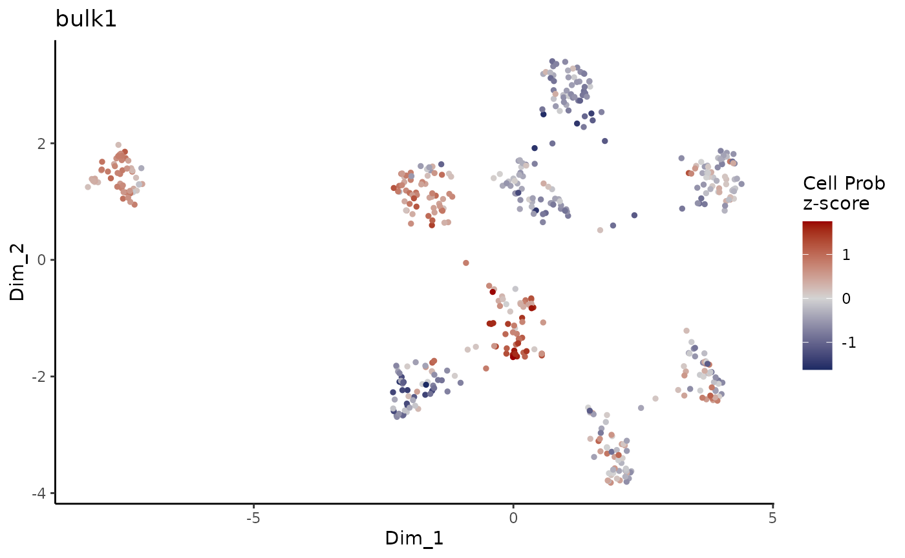

Quick set up and example
Intro_to_ConDecon.RmdConDecon is a clustering-independent method for estimating cell abundances in bulk tissues using single-cell omics data as reference. In this tutorial, we will apply ConDecon to simulated transcriptomic data and visualize the expected results.
As a reference dataset, we will use simulated single-cell RNA-seq data containing 9 clusters/groups (gps). This data was generated using the software Splatter. We will start by loading the single-cell count and meta data provided by the ConDecon package.
# Single-cell gene expression count data
data(counts_gps)
# Single-cell PCA latent space
data(latent_gps)
# Top 2,000 variable genes
data(variable_genes_gps)
# UMAP embedding of the single-cell data
data(umap_embedding_gps)
# cluster IDs for the single-cell data
data(cell_gps)
# Visualize the cluster annotations of the single-cell RNA seq data
ggplot(data.frame(umap_embedding_gps), aes(x = UMAP_1, y = UMAP_2, color = cell_gps)) +
geom_point(size = 0.5) +
theme_classic()
We will use ConDecon to deconvolve 5 simulated bulk transcriptomic profiles.
# Bulk gene expression data, normalized by TPMs
data("bulk_gps")‘RunConDecon’ is the main function necessary to infer cell abundances for each input bulk sample. This function requires 4 inputs:
- Single-cell count matrix
- Single-cell latent space matrix
- Character vector of variable features associated with the single-cell data
- Normalized bulk data matrix
The output of this function is a ConDecon object containing a Normalized_cell.probs matrix with the predicted cell probability distributions.
ConDecon_obj = RunConDecon(counts = counts_gps,
latent = latent_gps,
variable.features = variable_genes_gps,
bulk = bulk_gps,
dims = 10)With ‘PlotConDecon’, we can visualize the relative cell probabilities of each of the 5 bulk sample.
PlotConDecon(ConDecon_obj = ConDecon_obj,
umap = umap_embedding_gps)